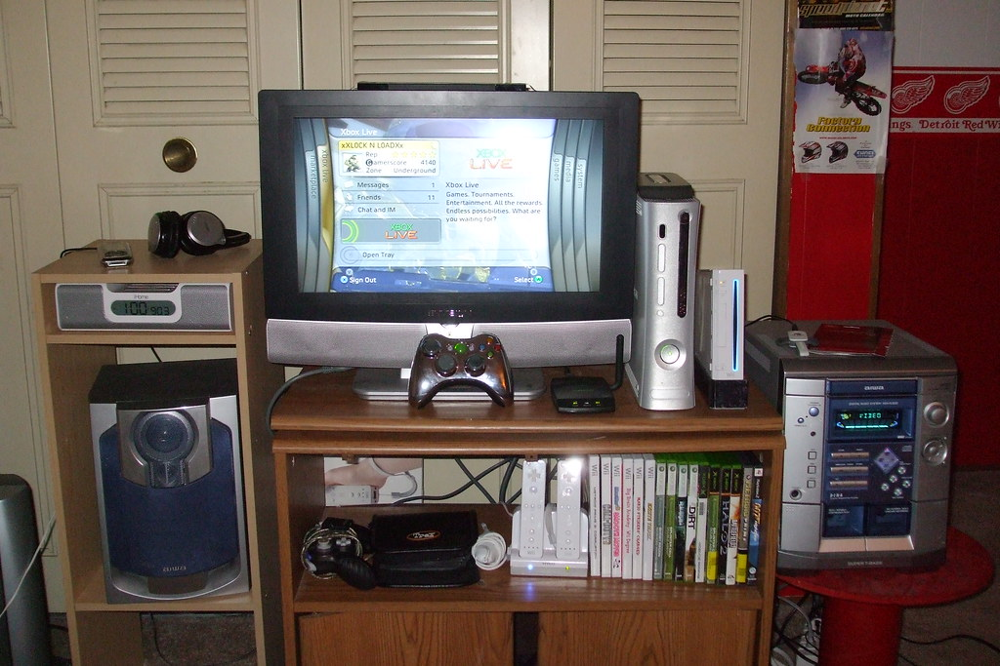
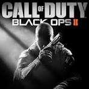
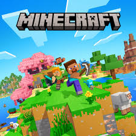
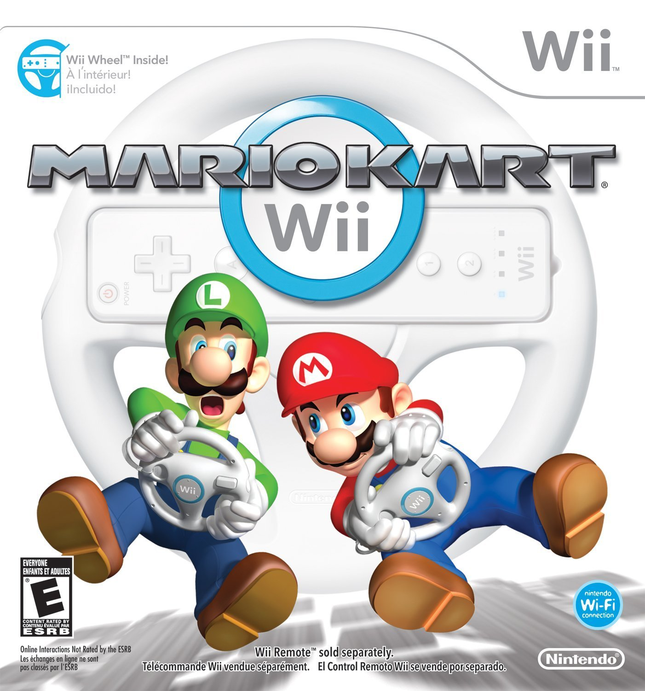

My top games and why I love them

Gaming has been a huge part of my life for as long as I can remember. Ever since I was younger me and my brother would play games almost everyday after school. We first had a Playstation 2 which started out with us playing Lego Star Wars and some random motorcross games. The Nintendo Wii is my favorite console of all time, my whole family would get together to play Mario Kart and I had some of the best times playing with them. Even though it was very competitive, we always had fun. So here are my top favorite games of all time as someone who has grown up playing games and still does to to this day.

Black Ops 2 is my #1 game and the best Call of Duty ever made hands down. I still play this game because of how much I enjoy it. In the beginning I only would play multiplayer because I used to be afraid of playing zombies until my younger brother convinved me to play it. The maps were some of my favorite and all the customization between players banners and theatre mode really made it stand out. There was one map that stood out to me in zombies and it was Buried. It was so unique and you could craft a makeshift "thundergun" from a mannequin and a fan along with other parts. There was even a maze with witches to go through and so many easter eggs. I think the easter eggs of this game are what also made it great, me and my brother would be looking up YouTube tutorials and have so much fun showing other people aswell. For me the nostalgia that the game brings is a large factor on why it is the best. It still amazes me that one of the maps, Nuketown, was a futuristic map at that time and was based in 2025, which we have now passed in time.

Minecraft gives you complete creative freedom. Whether I’m building huge structures or just surviving, there’s always something new to do. It’s a game I never get bored of.

Mario Kart Wii is one of the most fun games to play with friends. The chaos, the items, and the races make every game exciting and competitive.